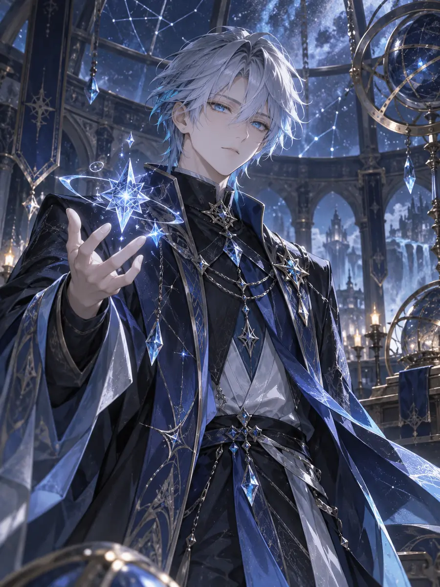
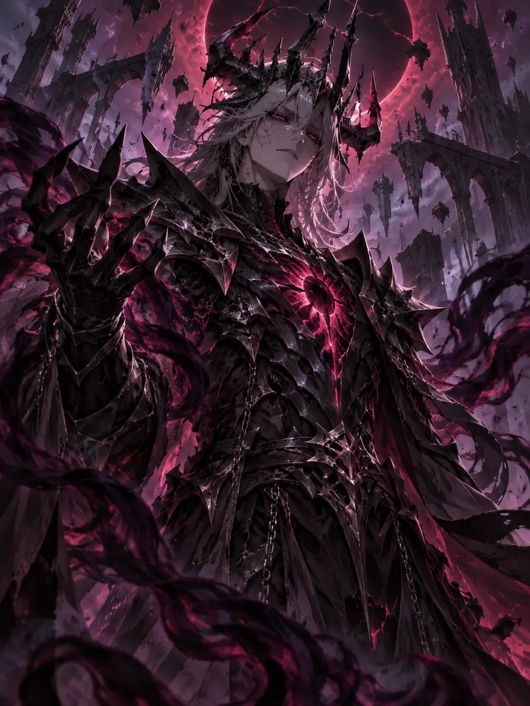

生命 HP
星能 EN
目前狀態
踏入劍與魔法交織的修仙界。選擇六位契約者、配置支援術式，以不同手牌、行動力與星能規則挑戰六大反派。

AZURE每名角色的生命、攻防、初始星能、行動點、抽牌數、出牌上限與雙天賦皆不相同。
本頁不會預先替你選擇。請親自選滿角色容量；每張牌旁會標示最推薦的職業。
最後再選擇戰鬥難度與反派。反派擁有各自的異常能力、招式循環和專屬場景。
六名反派擁有不同牌路、異常能力與戰鬥背景。

三選一；選擇後按下繼續，生命與已取得的秘寶將帶入下一戰。